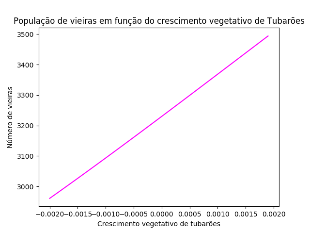

Modelagem e Simulação do Mundo Físico - Professor Fábio H.
O aluno tem a tarefa de criar um modelo para um sistema físico envolvendo tubarões, raias e vieiras, realizando algum tipo de análise do modelo equacionado (ou seja, respondendo uma questão explicativa, preditiva ou relacionada à determinação dos parâmetros ideais para um sistema, no caso, acerca da dinâmica populacional entre esses animais marinhos).
Apresentada a proposta do trabalho, buscou-se saber como a população de tubarões afeta a população de vieiras. Por isso, a questão que a ser respodida no projeto é: "Variando a taxa de crescimento vegetativo da população de tubarões, o que acontecerá com a população de vieiras após 20 anos?"

A partir da simulação obtida em linguagem de programação, chegou-se a resposta para a pergunta descrita anteriormente, a qual está presente no Gráfico 2. A interpretação da figura nos mostra que quanto maior a taxa de crescimento vegetativo dos tubarões, maior será a população de vieiras após 20 anos. Isso pode ser justificado pela relação entre os 3 animais marinhos estudados nesse projeto: A superpopulação de tubarões (consumidor final da cadeia alimentar estudada) desequilibra a população de raias, as quais predam as vieiras. Uma falta de raias, consequentemente, aumentará a população de vieiras após 20 anos. Esse trabalho pode mostrar o tamanho impacto o qual a caça predatória pode causar num ecossistema, já que ela alterará a taxa de crescimento vegetativo.
Voltar{kind=link}